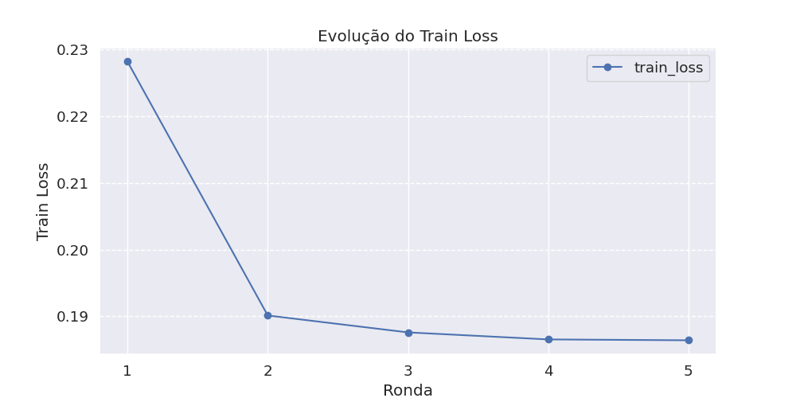
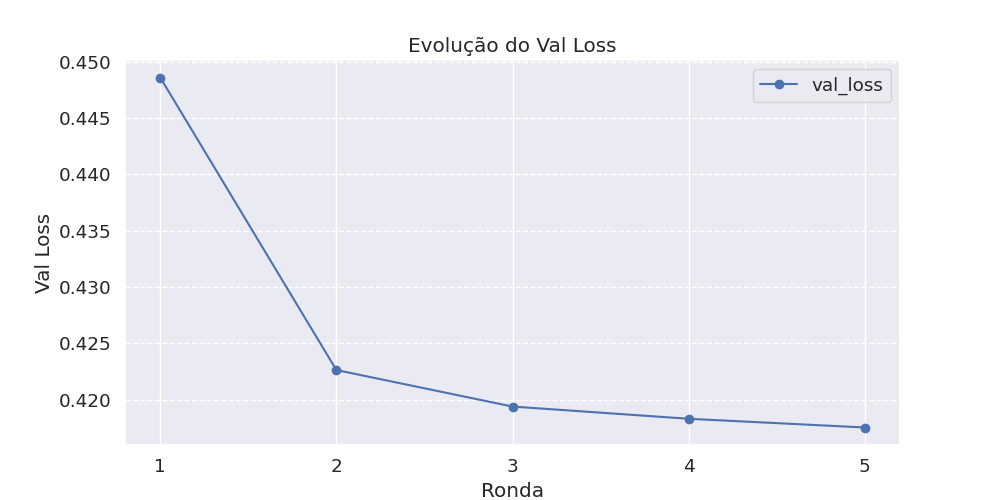
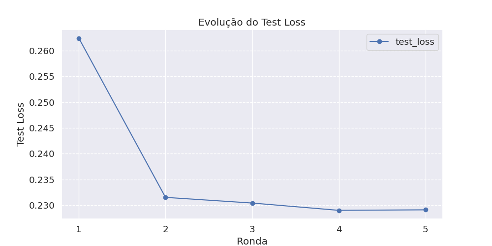
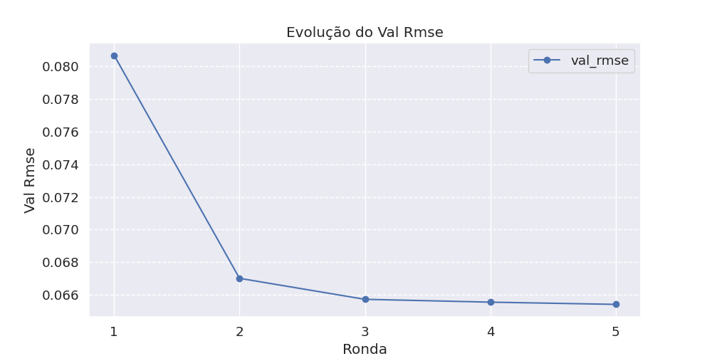
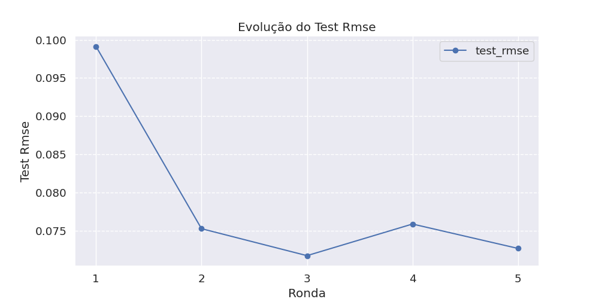

| Ronda | Train Loss | Val Loss | Val Rmse | Val Accuracy | Val Precision | Val Recall | Val F1 |
|---|---|---|---|---|---|---|---|
| 1 | 0.2282 | 0.4486 | 0.08069861 | 0.9915 | 0.9048 | 1.0000 | 0.9500 |
| 2 | 0.1901 | 0.4226 | 0.0670056 | 0.9936 | 0.9268 | 1.0000 | 0.9620 |
| 3 | 0.1876 | 0.4194 | 0.065717146 | 0.9936 | 0.9268 | 1.0000 | 0.9620 |
| 4 | 0.1865 | 0.4183 | 0.0655428 | 0.9957 | 0.9500 | 1.0000 | 0.9744 |
| 5 | 0.1864 | 0.4175 | 0.065406136 | 0.9936 | 0.9268 | 1.0000 | 0.9620 |
| Ronda | Test Loss | Test Rmse | Test Accuracy | Test Precision | Test Recall | Test F1 |
|---|---|---|---|---|---|---|
| 1 | 0.2625 | 0.0991 | 0.9893 | 0.9020 | 1.0000 | 0.9485 |
| 2 | 0.2315 | 0.0753 | 0.9936 | 0.9388 | 1.0000 | 0.9684 |
| 3 | 0.2304 | 0.0717 | 0.9936 | 0.9388 | 1.0000 | 0.9684 |
| 4 | 0.2290 | 0.0759 | 0.9936 | 0.9388 | 1.0000 | 0.9684 |
| 5 | 0.2291 | 0.0727 | 0.9936 | 0.9388 | 1.0000 | 0.9684 |
| Ronda | Fit | Evaluate | Lime | Shap |
|---|---|---|---|---|
| 1 | 0.4423 | 0.0016 | 0.0000 | 0.0000 |
| 2 | 0.0681 | 0.0020 | 0.0000 | 0.0000 |
| 3 | 0.0706 | 0.0018 | 0.0000 | 0.0000 |
| 4 | 0.0680 | 0.0016 | 0.0000 | 0.0000 |
| 5 | 0.0680 | 0.0017 | 2.4639 | 11.9411 |
Train Loss |
Val Loss |
Test Loss |
Val Rmse |
Test Rmse |
Ver LIME interativo | Ver LIME (texto)
Relatório gerado automaticamente em 2025-05-02 21:42:47